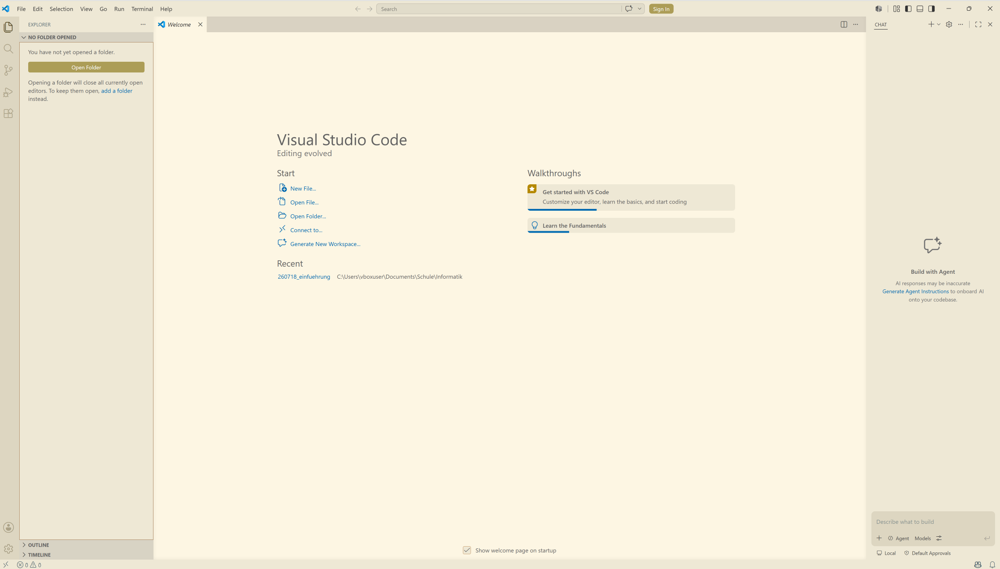
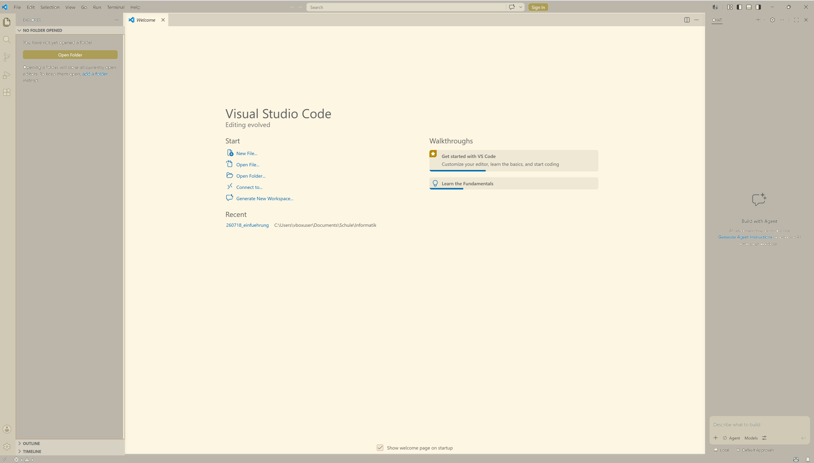
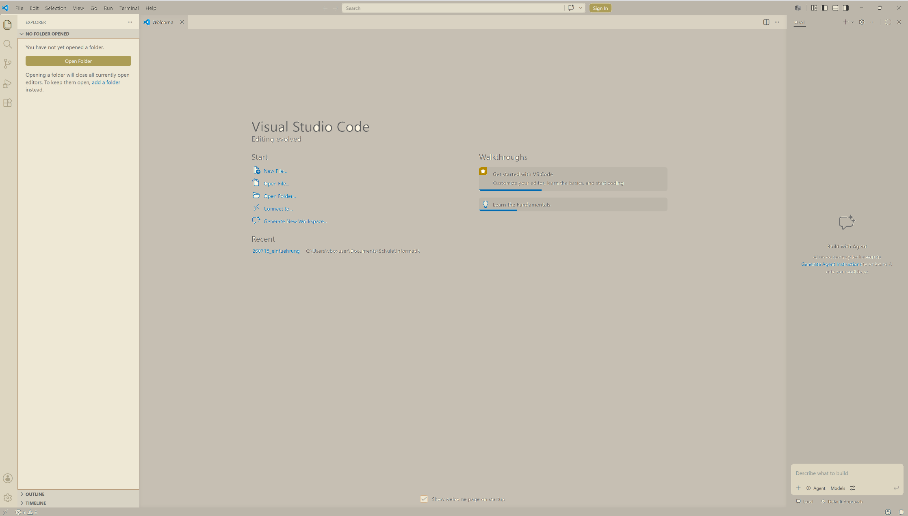
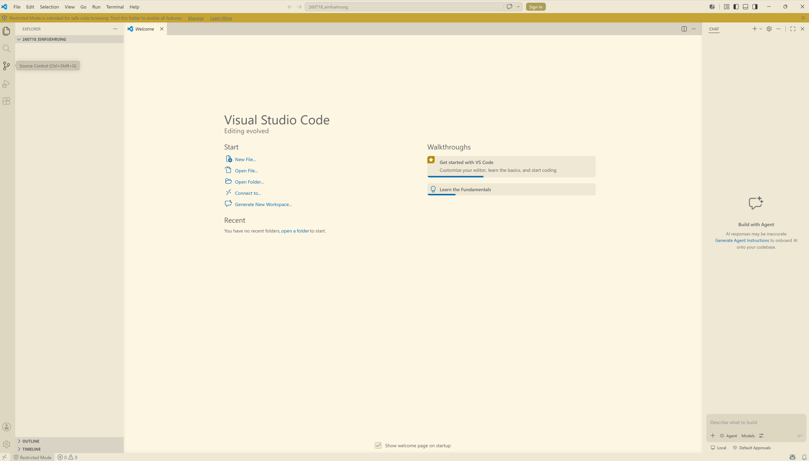
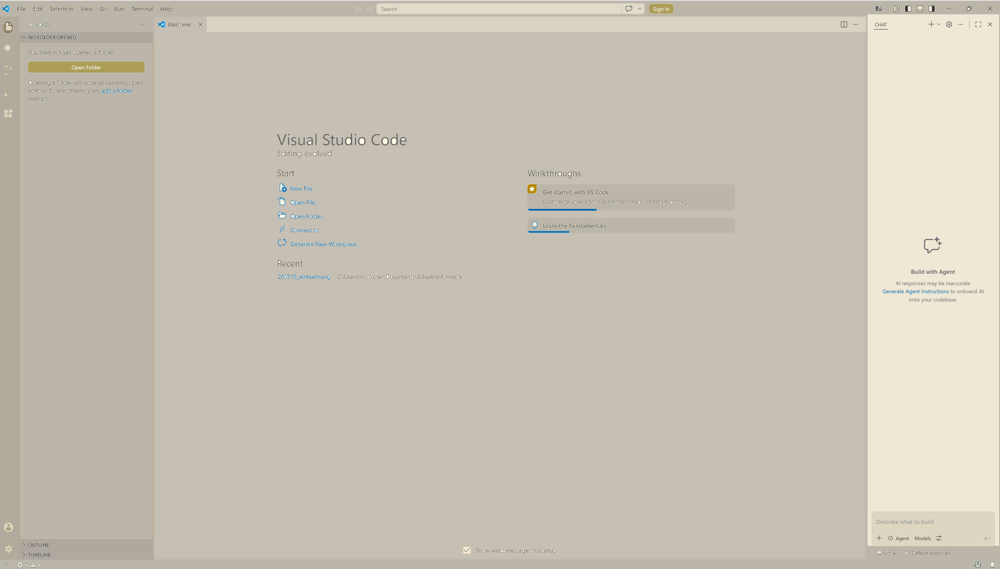
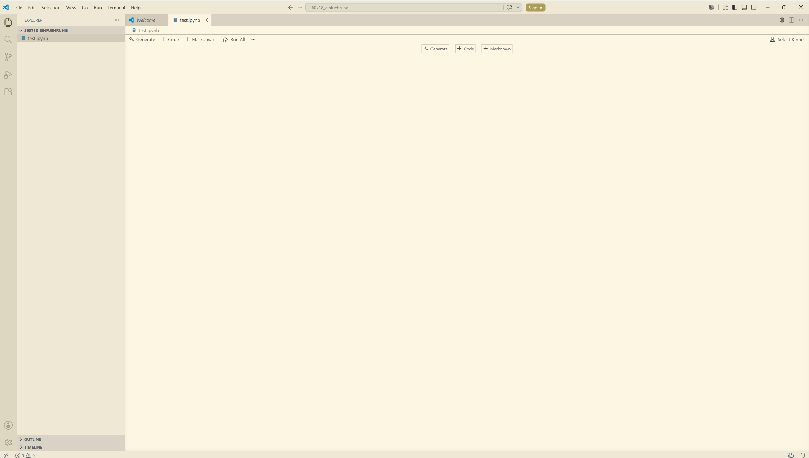

2 Einrichten der Arbeitsumgebung
Im Unterricht arbeiten wir mit der Programmiersprache Python. Über weite Strecken verwenden wir sogenannte Jupyter Notebooks, in denen Text und ausführbare Programmteile (Code-Snippets) direkt kombiniert werden können.
Im Hintergrund sind diese Notebooks wie reine Textdateien aufgebaut. Damit wir sie im Unterricht komfortabel und übersichtlich bearbeiten können, nutzen wir einen modernen Editor: Visual Studio Code (kurz VS Code). Diese Software hat sich weltweit als Standard etabliert.
Im Folgenden wird die Installation der erforderlichen Programme Schritt für Schritt erklärt.
2.1 Installation von Python
In der Grundinstallation von Windows 11 ist Python nicht installiert. Hier finden Sie die Schritt für Schritt Anleitung zur Installation von Python in der im Unterricht verwendeten Version.
Rufen Sie die Seite
python.orgauf.Wählen Sie den Menüpunkt Downloads.
Klicken Sie auf die Schaltfläche
Download Python install manager. In der Grundeinstellung wird der Python-Installer im OrdnerDownloadsabgelegt. Allenfalls öffnet sich ein Dialogfenster, in dem der Speicherort ausgewählt werden kann. Wählen Sie den OrdnerDownloads.Öffnen Sie den Dateimanager (Windows Explorer) und navigieren Sie in den Ordner
Downloads.Starten Sie die Installation durch Doppelklick auf die Datei
python-manager-xx.x. Im sich öffnenden Dialogfenster klicken Sie auf die SchaltflächeInstall Python.Der Installer stellt im Terminal mehrere Fragen. Beantworten Sie alle mit
yund Enter. Einzige Ausnahme: Die Frage, ob die Online-Hilfe angezeigt werden soll, beantworten Sie mitn.Kontrollieren Sie die Installation. Öffnen Sie dazu ein Terminal (Windows-Menü, nach
Terminalsuchen,Öffnenklicken). Im sich öffnenden Terminal geben Siepythonein und bestätigen die Eingabe durch die Enter-Taste. Im Terminal erscheinen auf der untersten Zeile>>>als Eingabeaufforderung. Schreiben Sieprint('Hello World')bestätigen Sie diese Eingabe durch die Enter-Taste. Im Terminal sollte
Hello Worldausgegeben werden. Wenn das geklappt hat, haben Sie erfolgreich Ihren ersten Python-Befehl ausgeführt. Sie könnenPythonbeenden, indem Siequit()eingeben und durch die Enter-Taste bestätigen. Das Terminal schliessen Sie durch die Eingabe vonexitund die Bestätigung durch die Enter-Taste.
2.2 Installation von Visual Studio Code (VS Code)
- Rufen Sie die Seite https://code.visualstudio.com/download (kurz-URL https://t1p.de/jt3ge) auf.
- Klicken Sie die Schaltfläche
Windows. In der Grundeinstellung wird der VS Code-Installer im OrdnerDownloadsabgelegt. Allenfalls öffnet sich ein Dialogfenster, in dem der Speicherort ausgewählt werden kann. Wählen Sie den OrdnerDownloads. - Öffnen Sie den Dateimanager (Windows Explorer) und navigieren Sie in den Ordner
Downloads. - Starten Sie die Installation durch Doppelklick auf die Datei
VSCodeUserSetup-x64-xxx. Im sich öffnenden Dialogfenster akzeptieren Sie die Lizenzbedingungen und klicken Sie aufWeiter. - Akzeptieren Sie den Standard-Ziel-Ordner durch
Weiter. - Akzeptieren Sie den Startmenü-Ordner mit
Weiter. - Im Dialog
Zusätzliche Aufgaben auswählenkreuzen Sie die vier untersten Boxen an. - Bestätigen Sie alle getroffenen Wahlmöglichkeiten durch
Installieren. - Schliessen Sie die Installation durch klicken auf
Fertigstellenab. - Wenn sich VS Code zum ersten Mal öffnet, klicken Sie
Continue without Signing in. - Wählen Sie im nächsten Dialog ein Farbschema, das Ihnen gefällt und bestätigen Sie Ihre Wahl durch einen Klick auf
Continue. - Schliessen Sie das Set-Up ab durch anklicken von
Get Started.
2.3 Das erste eigene Jupyter Notebook
In der Einleitung habe ich einen grundlegenden Überblick über die Dateiorganisation gegeben. Die dort beschriebene Struktur können Sie beim Erstellen des ersten eigenen Jupyter Notebooks nutzen. Das stellt sicher, dass Sie die einmal erstellte Datei auch wieder finden.
Ich gehe davon aus, dass Sie die folgende Ordnerhierarchie verwenden:
C:\Users\username\Documents\Schule\Informatik
username ist durch Ihren Windows-Benutzername zu ersetzen. Falls Sie die entsprechenden Ordner noch nicht angelegt haben, ist jetzt der Zeitpunkt, das zu tun. Legen Sie im Ordner Informatik zusätzlich einen Unterordner mit dem Namen YYMMDD_einfuehrung an; für den 19. August 2026 also 260819_einfuehrung.
Wenn der Ordner angelegt ist, öffnen Sie VS Code (Windows Menü > VS Code).
Das VS Code Fenster ist im ersten Moment etwas verwirrend.

Gehen wir die einzelnen Elemente des Fensters der Reihe nach durch. Im Zentrum des VS Code-Fensters findet sich der Arbeitsbereich.

Links davon befindet sich die Navigationsleiste. Hier kann der neu angelegte Ordner als Arbeitsverzeichnis ausgewählt werden.

Dazu muss man die Schaltfläche Open Folder anklicken und sich im Dialog bis zum gewünschten Ordner durchklicken. Wenn man im gewünschten Ordner angekommen ist, wird die Auswahl mit dem Schalter Select folder bestätigt.
Sobald der gewünschte Ordner ausgewählt worden ist, verändert sich das Aussehen des Fensters geringfügig.

Die auffälligste Änderung ist der Balken mit dem Text ‘Restricted Mode is intended for safe code browsing. Trust this folder to enable all features. Manage Learn More’ zwischen Menüzeile und Arbeitsbereich. Klicken Sie auf Manage und wählen Sie im Dialog Trust. Anschliessend können Sie das Dialogfenster schliessen. Damit ist der Hinweisbalken verschwunden.
Eine zweite, etwas weniger auffällige Veränderung im Fenster ist der Titel des ausgewählten Ordners in der Navigationsleiste. Weil der Ordner im Moment noch leer ist, steht nur der Titel des Ordners da. Sobald wir eine Datei anlegen, erscheint diese auch in der Navigationsleiste. Bevor wir eine Datei anlegen aber noch der Hinweis auf den letzten bisher noch nicht besprochenen Teil des VS Code-Fensters.

Microsoft als Herausgeber von VS Code will die Benutzer mit einem KI Chatbot unterstützen. Dabei handelt es sich um ein Freemium-Angebot; d.h. ein bescheidener Funktionsumfang steht gratis zur Verfügung und für den vollen Funktionsumfang muss man ein Abonnement lösen. Da wir im Informatikunterricht herausfinden wollen, wie Programme funktionieren, können wir diese Chat-Leiste wegklicken.
Um eine neue Datei anzulegen, fahren Sie mit der Maus in die Navigationsleiste. Dann erscheinen dort neben dem Namen des Ordners mehrere kleine Symbole. Das Symbol ganz links sieht aus, wie eine leere Seite Papier mit einem kleinen Plus an der unteren rechten Ecke. Dieses Symbol steht für das Anlegen einer neuen Datei. Wenn Sie das Symbol anklicken, öffnet sich in der Navigationsleiste ein Eingabefeld. Dort geben Sie den Namen der neuen Datei ein. Verwenden Sie den Namen test.ipynb. Dabei ist test der eigentliche Name der Datei und .ipynb die Dateinamenserweiterung für ein Jupyter Notebook. Damit erkennt VS Code, wie mit dieser Datei zu verfahren ist.

Das Fenster sollte jetzt wie Figure 2.1 aussehen.
Bevor Sie in diesem Notebook Python-Code ausführen können, müssen Sie mit der Schaltfläche Select Kernel oben rechts auswählen, wie VS Code Ihren Code ausführen soll. Der Kernel ist das Programm, das Ihren Python-Code im Notebook tatsächlich ausführt – VS Code muss einmalig pro Arbeitsverzeichnis wissen, welches Python es verwenden soll.
Wählen Sie…
- …
Install Python and Jupyter. - …
Python Environments.... - …
+ Create Python Environment. - …
Quick Create.
Nach diesen Arbeitsschritten steht oben rechts nicht mehr Select Kernel sondern neu .venv ....
Jetzt können Sie mit der Schaltfläche + Code eine sogenannte Code-Zelle öffnen. In dieser Zelle können Sie Ihren Python-Code schreiben. Damit Sie das Prüfen können, geben Sie in dieser Zelle print('Hello World') ein. Sie können die Code-Zelle ausführen, in dem Sie auf den Play-Knopf am linken Rand der Zelle klicken oder indem Sie die Umschalttaste und die Enter Taste drücken.
Wenn Sie eine neue Zelle anlegen wollen, fahren Sie mit der Maus in der Mitte einer schon bestehenden Zelle entweder an den oberen oder unteren Rand der schon bestehenden Zelle. Sie können dann auswählen, ob Sie eine Code- oder eine Markdown-Zelle anlegen wollen. Markdown-Zellen sind für die Eingabe von Text vorgesehen. Sie können diesen Text mit Formatierungsbefehlen formatieren. Die entsprechenden Befehle finden Sie auf der Website von Markdown Guide.